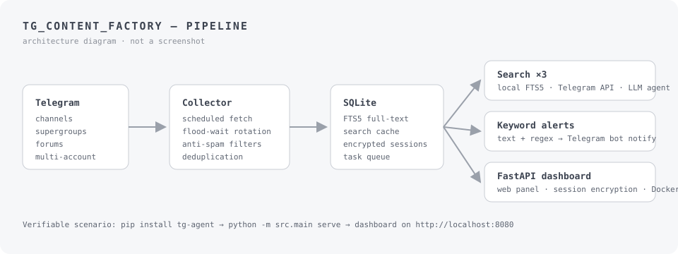
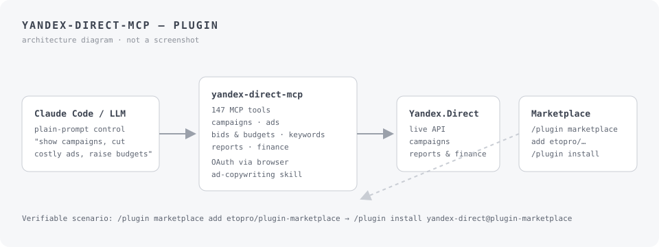

Case study
tg_content_factory

- The task
- Keeping track of hundreds of Telegram channels and chats by hand does not scale: messages scroll away, built-in search is limited, and there is no way to watch keywords across accounts.
- What was built
- A self-hosted monitoring pipeline: multi-account collector with flood-wait rotation, SQLite (FTS5) message store, three search modes (local full-text, direct Telegram API, LLM agent), keyword alerts with bot notifications, anti-spam filters and a FastAPI web dashboard.
- Verified result
- Published on PyPI as tg-agent and shipped via tagged GitHub Releases (latest v0.2.3). Verifiable end-to-end scenario: pip install tg-agent, then python -m src.main serve brings up the dashboard on http://localhost:8080. No usage metrics are claimed.
Role Sole author — architecture, Telegram client layer, storage, dashboard.
Case study
yandex-direct-mcp-plugin

- The task
- Routine Yandex.Direct campaign work means clicking through a slow web interface; an LLM agent can only help if the whole API is exposed to it as a structured, reliable tool surface.
- What was built
- A Claude Code plugin wrapping the Yandex.Direct API as 147 MCP tools — campaigns, ads, bids and budgets, keywords, reports, finance — with OAuth login through the browser, an ad-copywriting skill and a plugin-marketplace distribution channel.
- Verified result
- Installable from a public Claude Code plugin marketplace: /plugin marketplace add etopro/plugin-marketplace, then /plugin install yandex-direct@plugin-marketplace. Tagged releases up to v0.3.3; the full tool list is documented in docs/TOOLS.md in the repository.
Role Sole author — MCP server, tool surface, OAuth flow, skills.